Помады: как выбрать и использовать правильно
Помада — это главный акцент губ. Она помогает подчеркнуть цвет, форму и объем губ, сделать образ ярким или естественным. Правильный выбор помады зависит от типа кожи губ, цвета кожи и желаемого эффекта — матовый, сатиновый или блестящий.
Консультации / ЗаписатьсяТипы помад
Матовые, кремовые, сатиновые, тинты и жидкие помады.
Текстуры помад
Чем отличаются матовые, глянцевые и сатиновые формулы.
Оттенки помад
Как подобрать цвет помады под тон кожи и макияж.
Как наносить помаду
Техника нанесения для аккуратного и стойкого макияжа губ.
Карандаш для губ
Когда использовать контурный карандаш и как выбрать оттенок.
Подготовка губ
Скраб, бальзам и уход перед нанесением помады.
Стойкие помады
Как выбрать помаду, которая держится весь день.
Лучшие помады
Популярные помады разных брендов и их особенности.
Состав помад
Основные компоненты: воски, масла, пигменты и уходовые ингредиенты.
Как выбрать оттенок помады под тон кожи
Визажисты советуют учитывать подтон кожи — тёплый, холодный или нейтральный.
Как смывать помаду
Правильное удаление стойких и матовых помад.
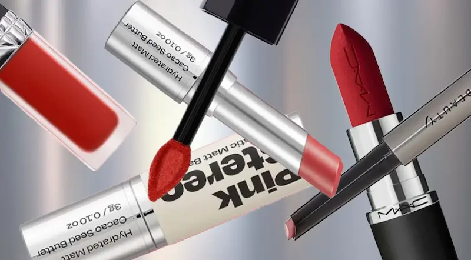
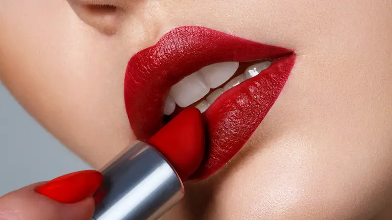
Типы помад для губ
Современные помады отличаются не только оттенками, но и формулой. Разные типы помад создают разный эффект на губах — от насыщенного матового покрытия до лёгкого сияющего блеска.
Выбор типа помады зависит от желаемого эффекта: насыщенный вечерний макияж, естественный дневной образ или стойкое покрытие на весь день.
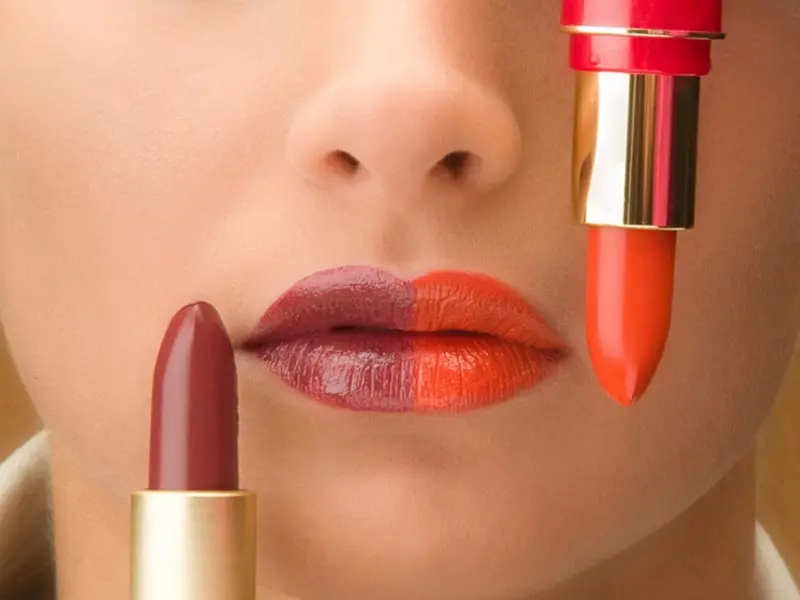
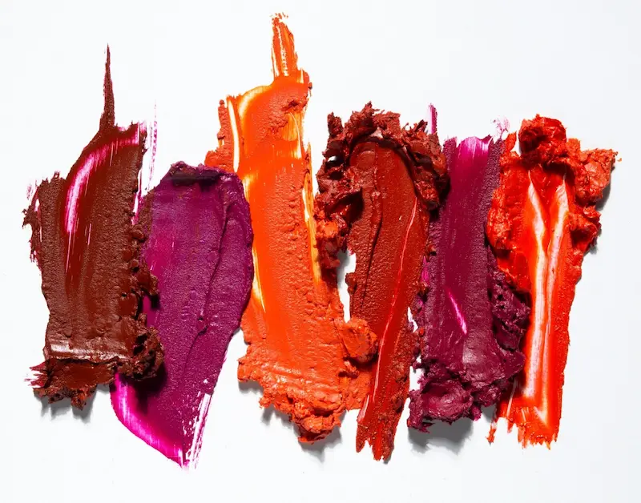
Текстуры помад
Текстура помады влияет на внешний вид макияжа губ и комфорт при ношении. Некоторые формулы создают плотное матовое покрытие, а другие придают губам сияние и визуальный объём.
Для сухих губ визажисты рекомендуют кремовые или сатиновые текстуры, а для стойкого макияжа лучше подходят матовые формулы.
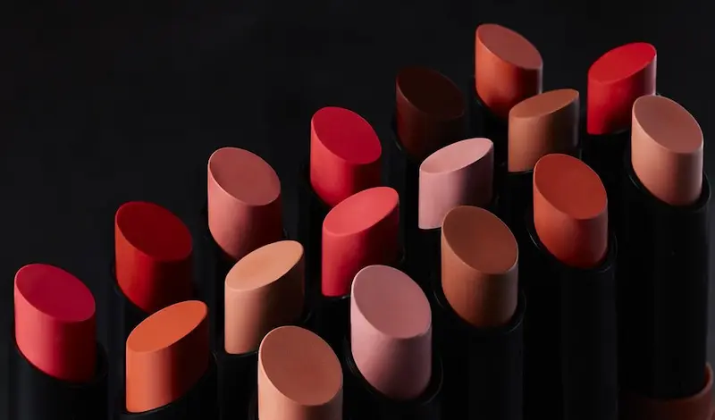
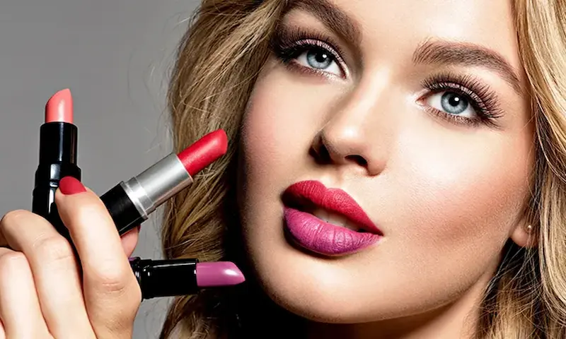
Оттенки помад
Цвет помады играет важную роль в создании образа. Оттенок может подчеркнуть тон кожи, цвет глаз и общий стиль макияжа.
Чтобы подобрать идеальный оттенок, важно учитывать тон кожи — тёплый, холодный или нейтральный.
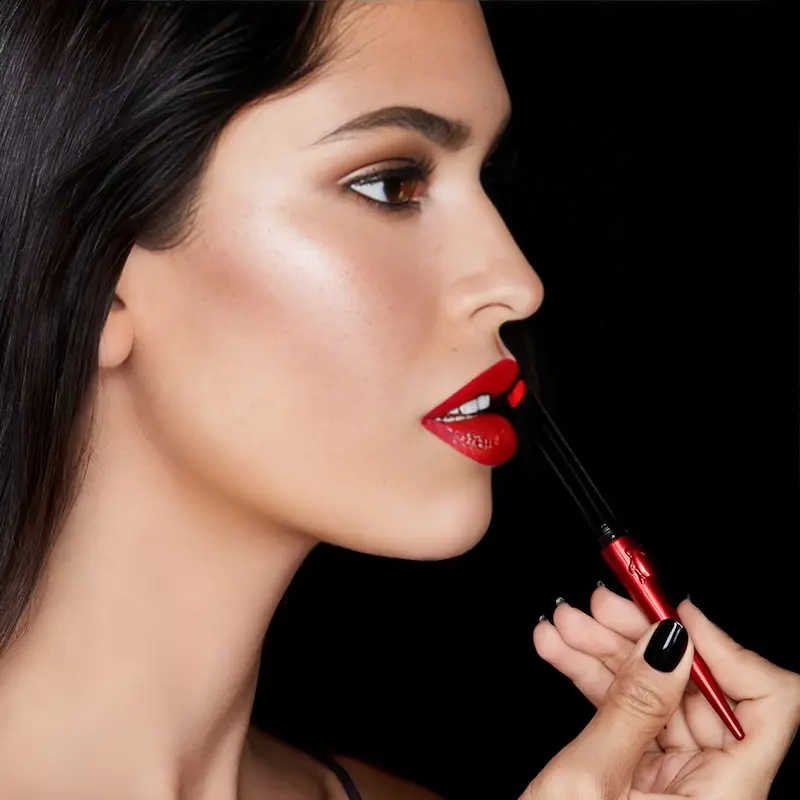
Как выбрать оттенок помады под тон кожи
Правильно подобранный оттенок помады может подчеркнуть тон кожи и сделать макияж более гармоничным. Визажисты советуют учитывать подтон кожи — тёплый, холодный или нейтральный.
- Светлая кожа: розовые, нюдовые и мягкие персиковые оттенки.
- Средний тон кожи: коралловые, розово-бежевые и ягодные цвета.
- Смуглая кожа: насыщенные красные, сливовые и винные оттенки.
- Холодный подтон: подойдут розовые и малиновые оттенки.
- Тёплый подтон: лучше смотрятся коралловые и оранжево-красные помады.
Универсальным вариантом считается классическая красная помада — она подходит большинству оттенков кожи.
Как правильно наносить помаду
Правильная техника нанесения помогает сделать макияж губ более аккуратным и стойким. Несколько простых шагов позволяют добиться ровного цвета и чёткой формы губ.
- Подготовьте губы: используйте мягкий скраб и бальзам.
- Обведите контур: карандаш поможет создать аккуратную форму.
- Нанесите помаду: можно использовать кисть или аппликатор.
- Удалите излишки: промокните губы салфеткой.
- Добавьте второй слой: для более насыщенного цвета.
Чтобы помада держалась дольше, визажисты рекомендуют слегка припудрить губы между слоями.
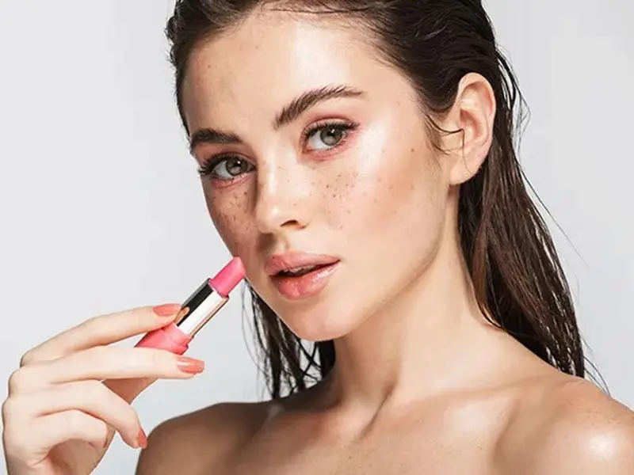
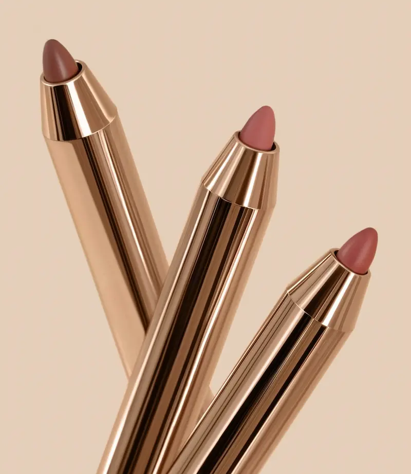
Карандаш для губ
Контурный карандаш помогает сделать форму губ более чёткой, предотвратить растекание помады и продлить стойкость макияжа.
- Чёткий контур: делает макияж аккуратным.
- Продлевает стойкость: помада держится дольше.
- Коррекция формы: можно слегка увеличить объём губ.
- Основа под помаду: карандаш можно наносить на всю поверхность губ.
Лучше выбирать карандаш, который совпадает с оттенком помады или немного темнее для создания более выразительного контура.
Нужен профессиональный макияж?
Если вы хотите подобрать идеальный тон или сделать профессиональный макияж, обратитесь к опытному визажисту.
Посмотреть услуги визажиста
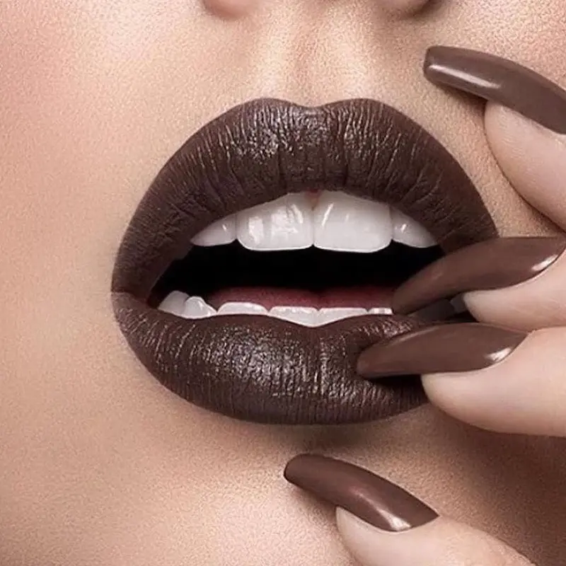
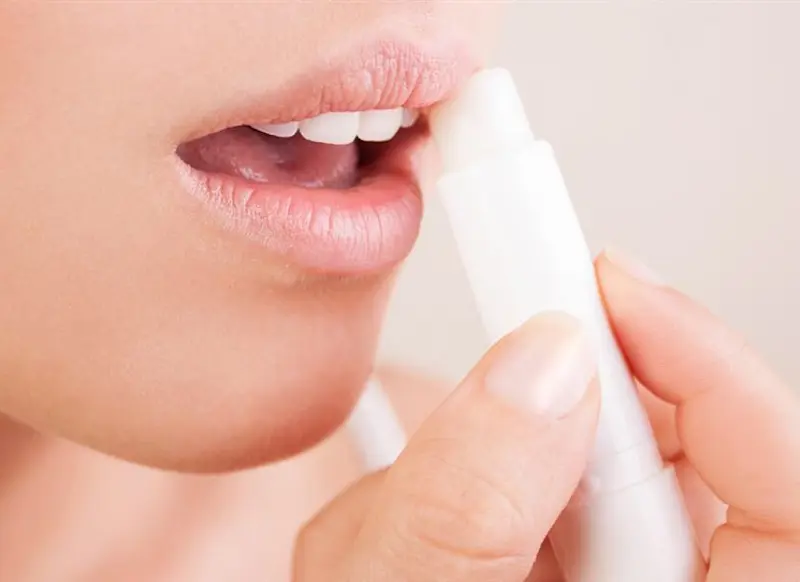
Подготовка губ перед нанесением помады
Перед нанесением помады важно подготовить губы. Гладкая и увлажнённая кожа помогает помаде ложиться ровно и держаться дольше.
- Скраб для губ: мягко удаляет сухие частички кожи.
- Бальзам: увлажняет и делает губы более мягкими.
- Основа под помаду: помогает выровнять поверхность губ.
- Праймер: увеличивает стойкость макияжа губ.
Если губы склонны к сухости, лучше выбирать увлажняющие текстуры помад и регулярно использовать бальзам для губ.
Состав помад
Современные помады содержат не только пигменты, но и ухаживающие компоненты, которые защищают и увлажняют губы.
- Воски: создают форму помады и обеспечивают плотность текстуры.
- Масла: смягчают губы и делают нанесение более комфортным.
- Пигменты: отвечают за насыщенность цвета.
- Полимеры: помогают помаде держаться дольше.
- Увлажняющие компоненты: витамин Е, масла и экстракты растений.
Многие современные формулы помад сочетают декоративный эффект и уход за губами, благодаря чему макияж становится не только красивым, но и комфортным.
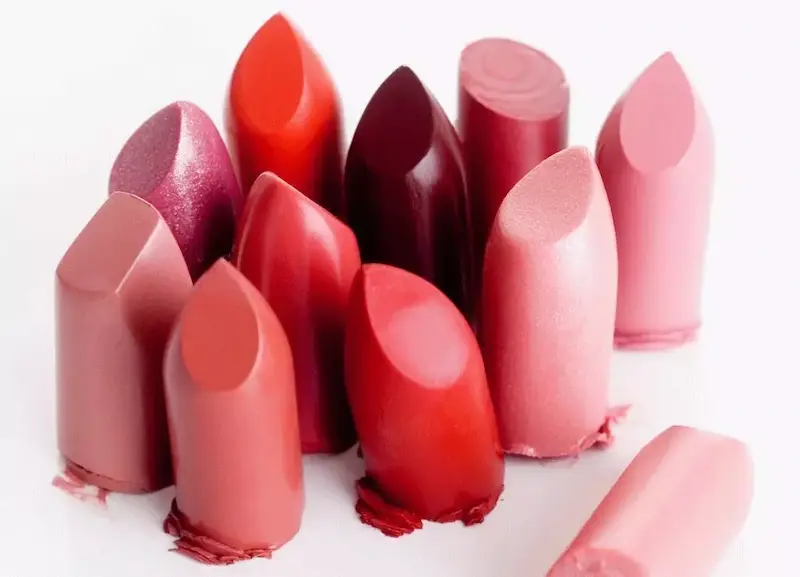
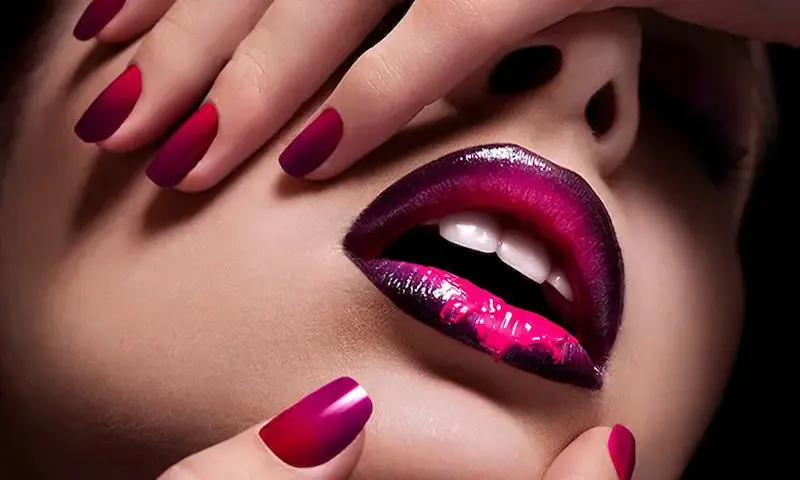
Стойкие помады
Стойкие помады предназначены для длительного ношения и могут сохранять цвет на губах в течение многих часов. Они особенно популярны для вечернего макияжа и длительных мероприятий.
- Жидкие матовые помады: создают плотное покрытие и долго держатся.
- Тинты: оставляют лёгкий цвет, который держится несколько часов.
- Двухфазные помады: состоят из цветной основы и прозрачного блеска.
- Формулы с полимерами: обеспечивают дополнительную стойкость.
Чтобы стойкая помада выглядела аккуратно, важно хорошо подготовить губы и наносить средство тонким равномерным слоем.
Лучшие помады для губ
Подборка популярных помад для губ — от классических матовых до современных кремовых текстур. В список вошли бюджетные и премиальные бренды, которые можно легко найти в интернет-магазинах и которые часто рекомендуют визажисты.

Легендарная матовая красная помада
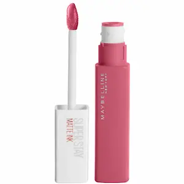
Очень стойкая жидкая матовая помада
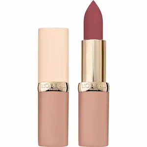
Кремовая текстура с увлажняющими маслами
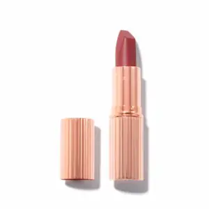
Популярная нюдовая помада визажистов
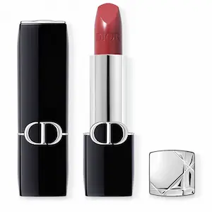
Премиальная помада с насыщенным цветом
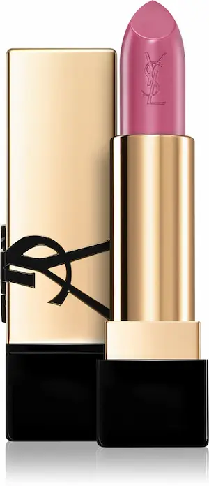
Яркий цвет и комфортная кремовая текстура
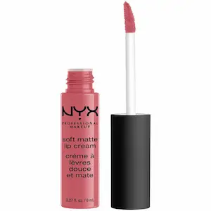
Популярная матовая помада с лёгкой текстурой
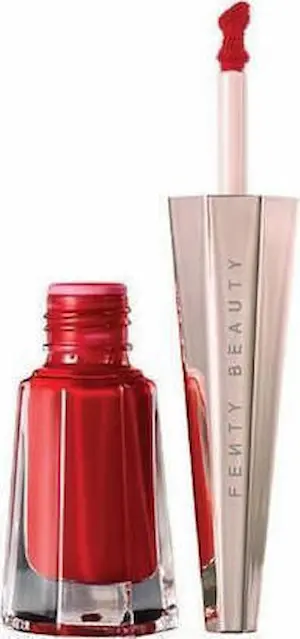
Интенсивный пигмент и стойкий матовый эффект
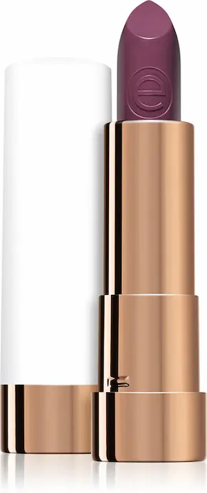
Бюджетная нюдовая помада для повседневного макияжа
Советы визажиста: секреты идеального макияжа губ
Эти советы помогут сделать макияж губ аккуратным, стойким и профессиональным, независимо от того, используете ли вы нюдовую, матовую или яркую помаду.
Как правильно смывать помаду
Правильное удаление помады помогает сохранить кожу губ мягкой и здоровой. Особенно важно аккуратно смывать стойкие и матовые формулы.
- Мицеллярная вода: мягко растворяет пигменты и очищает губы.
- Средства для снятия макияжа: подходят для стойких и водостойких формул.
- Гидрофильное масло: эффективно удаляет матовые и жидкие помады.
- Ватный диск: аккуратно удаляет остатки макияжа без трения.
После снятия макияжа рекомендуется нанести увлажняющий бальзам, чтобы восстановить кожу губ и предотвратить сухость.
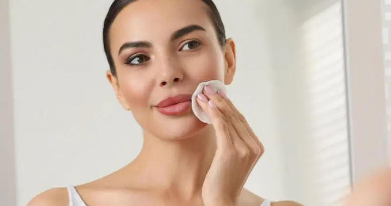
Частые ошибки при использовании помады
Избегая этих ошибок, можно добиться красивого и аккуратного макияжа губ, который будет выглядеть естественно и держаться дольше.
Часто задаваемые вопросы о помадах для губ
Как выбрать оттенок помады?
Оттенок помады лучше подбирать в зависимости от тона кожи. Для светлой кожи хорошо подходят нежные розовые и нюдовые оттенки, для средней — коралловые и ягодные, а для более тёмной — насыщенные красные и винные цвета.
Какая помада самая стойкая?
Самыми стойкими считаются жидкие матовые помады и тинты. Они содержат специальные полимеры, которые фиксируют пигмент на губах и помогают цвету держаться в течение многих часов.
Нужно ли использовать карандаш для губ?
Карандаш помогает подчеркнуть форму губ, сделать контур более чётким и предотвратить растекание помады. Особенно полезен он при использовании ярких и тёмных оттенков.
Почему помада подчёркивает сухость губ?
Если губы сухие или шелушатся, помада может подчеркнуть неровности. Перед макияжем рекомендуется использовать мягкий скраб и увлажняющий бальзам для губ.
Как сделать помаду более стойкой?
Для стойкости можно сначала нанести карандаш на всю поверхность губ, затем слой помады, слегка промокнуть губы салфеткой и нанести второй слой. Такой способ помогает цвету держаться значительно дольше.